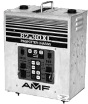

Welcome to the website of Precision Pinspotter Service, Inc. We have over 33 years of experience repairing and servicing bowling equipment in hundreds of locations. We are committed to providing you with quality pinspotter repair. We value our customers' satisfaction so we will do everything we can to fulfill your needs. Please click the About Us link above for more information.
Featured Special
82/90XL Pinspotter Control Chassis
090 005 700 (115 Volt) 620 905 700 (115 Volt) - Repair/Exchange 620 905 705 (220 Volt) - Repair/Exchange 620 905 769 (220 Volt) - Repair/Exchange Chassis type most common on 82/90XL. Four round C-23 type plugs connect machine signals and power on chassis. Replaceable items inside this chassis include:
Breaker 743 513 028
Spot/Lamp relay 755 520 074
S & T Motor Relay 755 520 062
Face Keypad Overlay 090 006 810
Motor Capacitor 090 003 748 for 110V or 743 000 307 for 220V
Logic Power Fuse 090 002 776
Power Supply Fuse 294 002 252
Be sure there is no existing warranty on a chassis before breaking its seal.

Featured Special
82/90XL Pinspotter Control Chassis
090 008 965 (220 Volt) 620 908 965 (220 Volt) - Exchange/Repair Universal voltage and cycle "black chassis" for use with later model XL pinspotters. All machine connections on this chassis are made with rectangular, white plugs. Replaceable items inside this chassis include:
Breaker 090 008 939
Spot/Lamp Fuse 090 002 775
S & T Motor Relay 755 520 062
Motor Capacitor 743 000 307
Logic Power Fuse 090 002 776
Power Supply Fuse 294 002 252
Be sure there is no existing warranty on a chassis before breaking its seal.